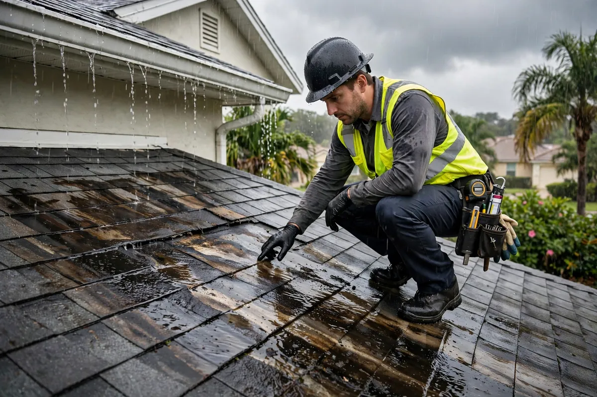

Roof Leak Cleanup in Hollywood, FL
Roof leaks lie about where they start. Water slips under flashing or through damaged roofing, travels along the deck and framing, and finally drips through your ceiling — sometimes rooms away from the actual breach. Roof leak cleanup handles the interior damage this journey causes: containing active drips, protecting what's below, pulling saturated insulation, and drying the attic and ceiling assemblies while your roofer fixes the roof itself.

Understanding Roof Leak Cleanup in Hollywood
In Hollywood, the usual culprits are wind-driven rain forcing water under tiles or shingles, failed flashing around vents and skylights, and ponding on flat or low-slope sections after heavy downpours. Once inside, water rarely drops straight down — it follows the path of least resistance along roof decking, rafters, and top plates, spreading sideways before gravity finally pulls it through the ceiling drywall. That's why the stain in your living room can trace back to a breach over the garage.
Attic insulation is the silent casualty: fiberglass batts compress when wet and never fully recover their insulating value, while cellulose turns into a soggy mat that holds moisture against the framing. Ceiling drywall sags, seams tape-pop, and in prolonged leaks the top plates and joists stay damp enough to worry about. Interior drying can't stop an active roof leak, so the work is sequenced with the roofer's repair — we mitigate and dry inside while they secure the outside.
How We Handle the Job
Active drips get contained first — coverings over belongings and flooring, collection where water is still entering. Then the attic is inspected to trace the intrusion path: wet insulation is pulled where saturated, the decking and framing get moisture readings, and the true extent of the wet area is mapped rather than guessed from the ceiling stain. Extraction handles any pooled water, air movers dry the framing and cavities, and damaged ceiling drywall is assessed for removal once everything verifies dry. Throughout, we coordinate timing with your roofer so interior drying follows the permanent repair, not the other way around.
We explain what the attic inspection revealed so the stain on your ceiling makes sense. If the loss connects to broader storm damage, related work such as emergency water extraction, structural drying, or flood cleanup may be part of the same job — including the rainwater intrusion issues roof leaks often travel with.
Local Response and Insurance Support
Searching for roof leak cleanup near me usually means you need help without delay. We answer emergency calls around the clock. Documentation — photos and moisture readings — supports conversations with your insurance carrier when the loss is sudden and accidental. We do not decide coverage; we provide clear technical information about the work performed.
When to Call
Call if you have active water, wet materials that are not drying, odors after a leak, or a backup that may involve contaminated water. Early action in Hollywood’s climate is almost always less disruptive than waiting. For neighborhood-specific service, see our service areas. For the full list of capabilities, visit all services.
Frequently Asked Questions
Can you repair the roof as well?
Our scope is the interior: water cleanup, drying, and documentation. The roof repair itself belongs to a roofing contractor — we coordinate timing so our drying follows their permanent fix.
Why is the ceiling stain nowhere near the roof damage?
Water travels. It runs along decking, rafters, and framing — sometimes many feet sideways — before finding a weak spot to drip through. The stain marks the exit, not the entrance.
Does wet attic insulation have to go?
Usually, yes. Wet batts compress and lose their insulating value permanently, and cellulose mats hold moisture against wood framing. Drying the structure matters more than saving the insulation.
What if it's still raining and the roofer can't come yet?
We contain the interior damage — coverings, collection, extraction — and stabilize what we can. Full drying of the assemblies follows once the roof is secured and no new water is entering.